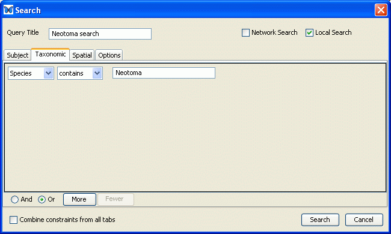

Morpho
User Guide
|
Morpho
User Guide
|
||||||
| KNB Home | Data | People | Informatics | Biocomplexity | Education | Software | |
| Morpho Searches |
| You can initiate a Search in Morpho by either
clicking the 'Search' icon in the toolbar or using the 'Search' menu in
the main Morph window.
In either case, the Search Dialog shown below should appear.
In the example screen shown above, the 'More' button has been used to create two 'Subject' search criteria. The top search criteria will look for items where the 'Title' 'starts-with' the phrase "NCEAS", while the lower region indicates the the 'Abstract' should 'contain' the word "fish". These two search criteria are to be logically 'ORed' as indicated by the button near the bottom of the screen. Note that there are two other tabs indicated at the top of the screen - 'Taxonomic' and 'Spatial'. The screen that appears when the 'Taxonomic' tag is clicked is shown below. Taxonomic searches can be combined with subject searches as indicated by the "Combine constraints from all tabs" button seen at the bottom of the screen. One can also give the search a 'name' and indicate whether the search should be of the central catalog, the local system, or both using the controls at the top of the dialog. 
When the 'Seach' button is clicked, the search will be carried out and a screen like that shown below will appear. The format of the resulting table is the same as that of the initial"My Data" screen. All data packages which meet the search criteria should appear in the table. Further information on any of the results can be obtained by double-clicking the row of interest.
|
 Search Menu
Search Menu